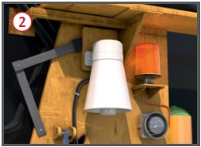
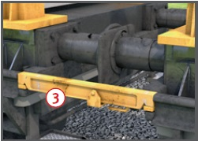
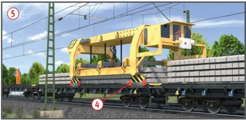

Durch Zugfahrten im benachbarten
Gleis (Betriebsgleis),
Portalkran, Fahrbewegungen im
Arbeitsgleis, Bewegungen der
Arbeitseinrichtungen sowie
durch unter elektrischer Spannung
stehende Fahrleitungen
können Personen verletzt oder
getötet werden.
Allgemeines
Mit Gleisumbauzügen werden
Schienen und Schwellen ausgetauscht.
Zwischen Gleisumbauzügen
und benachbartem Gleis
gibt es bei 4 m Gleisabstand
keinen Sicherheitsraum. Zur
Bedienung der Maschine sind
Seitenläufer auch auf der Nachbargleisseite
erforderlich .

Schutzmaßnahmen
Zugfahrten im benachbarten Gleis
Gefahr durch Zugfahrten im
benachbarten Gleis:
Arbeitsplätze auf der Betriebsgleisseite ,
Weiterarbeit der Maschine
nach Abgabe des Warnsignals
für Zugfahrt im benachbarten
Gleis,
durch die hohen Maschinenstörschallpegel
und durch die
Anforderungen der Arbeitsaufgaben
kann das Warnsignal
leicht überhört werden.
Gleisumbauzüge mit funkangesteuerten
maschineneigenen Warnsignalgebern fest ausrüsten .
Signalpegel muss im Abstand
von 1 m neben der Maschine
am Ohr der Beschäftigten um
mindestens 3 dB(A) über dem
Maschinenstörschallpegel liegen.
Vor Arbeitsbeginn den Funkempfänger
vom Sicherungsunternehmen auf die Maschine setzen lassen (Ansteuerung durch die feldseitige Warnanlage).
Gehörschutz benutzen, der für
das Signalhören im Gleisoberbau zugelassen ist (S-Kennzeichnung).
Bei akustischer Warnung eine Wahrnehmbarkeitsprobe unter ungünstigsten Arbeits- und Umgebungsbedingungen durchführen.
Arbeiten erst beginnen, wenn
die im Sicherungsplan festgelegten Maßnahmen umgesetzt und wirksam sind.
Wenn Schwellenwagen am
Baulosanfang über die Baulänge
hinaus reichen, muss auch hier
gesichert werden, z. B. mit Warnsystem
(DB Netz AG: Angabe der
Gesamtlänge = "Entfaltungslänge"
auf Seite 1 des Sicherungsplans).
Die Sicherung vor Fahrten im
benachbarten Gleis muss auch
an Arbeitsstellen vor und hinter
der Maschine (z. B. Kleineisenbehandlung)
vorhanden sein.
Bei notwendigem Aufenthalt
im Gefahrenbereich des Nachbargleises
(z. B. Störungsbeseitigung) Sicherungsmaßnahme
z. B. Sperrung des Nachbargleises, veranlassen.
Verlassen der Maschine/Aufenthalt im Nachbargleis nur
in Abstimmung mit dem Aufsichtführenden.
Bei Arbeitsstellen auf der
Betriebsgleisseite:
für jeden Mitarbeiter den Weg
zum Sicherheitsraum festlegen
und
erhöhte Sicherheitsfrist für
die Bestimmung der Annäherungsstrecke
festlegen lassen.
Sicherheitsraum aufsuchen,
sobald das Warnsignal ertönt.
Benachbartes Gleis nicht betreten,
solange die optische Erinnerungsanzeige des Warnsystems ansteht.
Vorhandene feste Absperrungen nicht übersteigen.
Feste Absperrung im Mittelkern
erst ab 5 m Gleisabstand
möglich (Arbeitsraum für
Seitenläufer).
Das Sicherungsunternehmen
setzt für den/die Seitenläufer
(Betriebsgleisseite) Überwachungsposten
ein (wenn erforderlich
Wiederholung des Warnsignals).
Mindestens ein Überwachungsposten ist immer erforderlich.
Arbeitsbreite einschließlich
Arbeitsraum für Seitenläufer
mindestens 3 m (DB Netz AG: Angabe
auf Seite 1 des Sicherungsplans).
Einsatz im Innengleis:
Warnung nur für eines der
Nachbargleise möglich (Signalverwechslung),
Zweites Nachbargleis: Feste
Absperrung bei Gleisabstand > 5 m, sonst Sperrung erforderlich.
Sicherungsmaßnahmen für
Auf- und Abrüsten vorsehen.
Portalkran
Vor Arbeitsbeginn Überfahrbrücken zwischen den Wagen einlegen.
Fahrwerk mit Handabweisern ausrüsten.
Nicht auf die Fahrschienen fassen.
Portalkran mit Kamera-Monitorsystem zur Fahrwegüberwachung ausrüsten.
Fahrwegbeleuchtung am Portalkran.
Fahrweg des Portalkrans freihalten.
Einrichtung zum Schutz vor
gegenseitigem Anfahren der Portalkrane in Betrieb setzen.


Arbeitseinrichtungen
Vor dem Aufnehmen der Schienen benachbartes Gleis sperren
lassen (Beauftragter der für den
Bahnbetrieb zuständigen Stelle).
Ausschwenkbegrenzungen für
bewegliche Maschinenkomponenten
so einstellen, dass der
Bahnbetrieb im benachbarten
Gleis nicht gefährdet wird (Gleisabstand,
Bogenradius, Überhöhung beachten).
Räumkette: Gefahrbereich freihalten
und Schutzeinrichtungen einsetzen.
Not-Aus-Schalter der Arbeitseinrichtungen,
z. B. Schwellenhebe- und Verlegeeinrichtung, vor Arbeitsbeginn auf Funktion testen.
Bei Aufenthalt im Gefahrbereich
von Arbeitseinrichtungen
zur Störungsbeseitigung
(Schwellenhebe- und Verlegeeinrichtung,
Räumkette), sind
diese gegen unbeabsichtigtes
Anlaufen zu sichern (Bedienungsanleitung beachten).
Schutzhelm tragen zum Schutz
vor herabfallenden und herumfliegenden Schottersteinen.
Vor Verlassen der Einsatzstelle
die Transportsicherungen für bewegliche Arbeitseinrichtungen einlegen.
Bei Arbeiten an hochliegenden
Arbeitsstellen Schutzmaßnahmen gegen Absturz treffen (z. B. Anschlagpunkte vorsehen, persönliche Schutzausrüstung benutzen).
Fahrleitungsanlagen
Aufstieg auf Maschine und
Schwellenwagen nur unter ausgeschalteter
und geerdeter Fahrleitungsanlage .
Vorhandene Fahrleitungsanlage immer
als spannungsführend ansehen,
wenn Spannungsfreiheit nicht zweifelsfrei feststeht und geerdet
ist – auch auf Abstellgleisen außerhalb der Baustelle.
Wenn Schwellenwagen am
Baulosende über die Baulänge
hinaus reichen, muss auch hier
die Fahrleitungsanlage für Arbeiten auf
den Schwellenwagen (Entzurren
der Neuschwellen, Verzurren der
Altschwellen) ausgeschaltet und
geerdet sein .
Fahrten im Arbeitsgleis
Versorgungsfahrten (Schwellenzüge)
müssen vor Personen, Maschinen und Fahrzeugen im Arbeitsgleis anhalten können.
Fahren auf Sicht mit reduzierter Geschwindigkeit.
Geschobene Rangierfahrt:
Spitzenbesetzung mit Luftbremskopf
und Sprechfunkverbindung
zum Triebfahrzeugführer.
Gefahrbereiche anderer
Maschinen im Arbeitsgleis freihalten.
Bei Nachtbaustellen ausreichende
Beleuchtung aller Arbeits- und
Verkehrsbereiche einrichten.